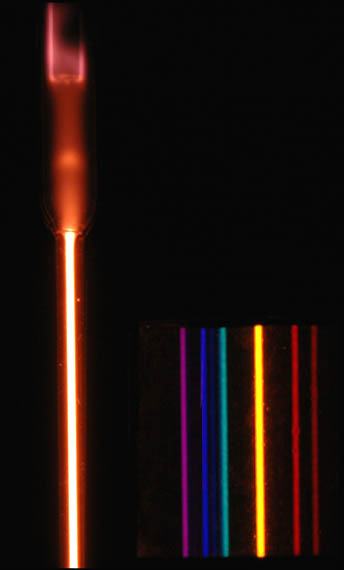

Atomic Spectra
|


|  |
At left is a helium spectral tube excited by means of a 5000 volt transformer. At the right of the image are the spectral lines through a 600 line/mm diffraction grating.
|
| Helium energy levels |
Reference
Jenkins & White
Ch. 21
| HyperPhysics***** Quantum Physics | R Nave |